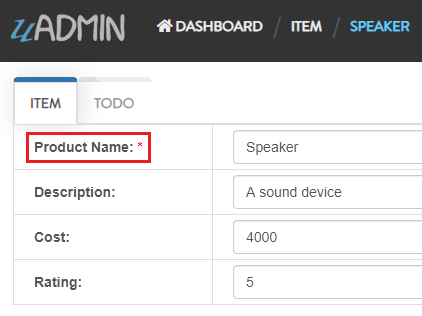
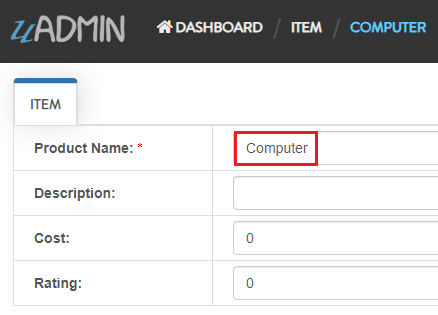
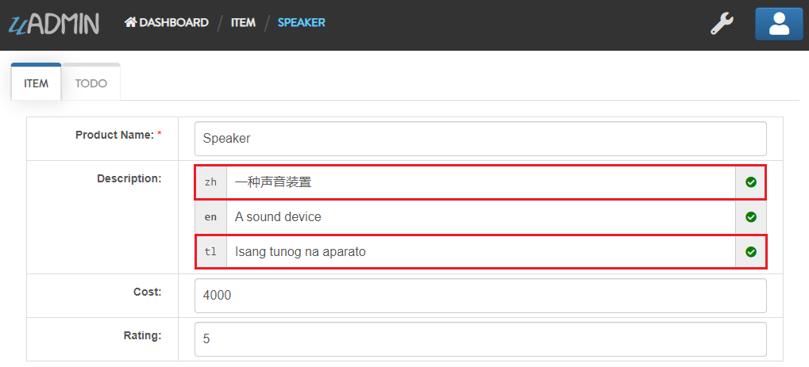
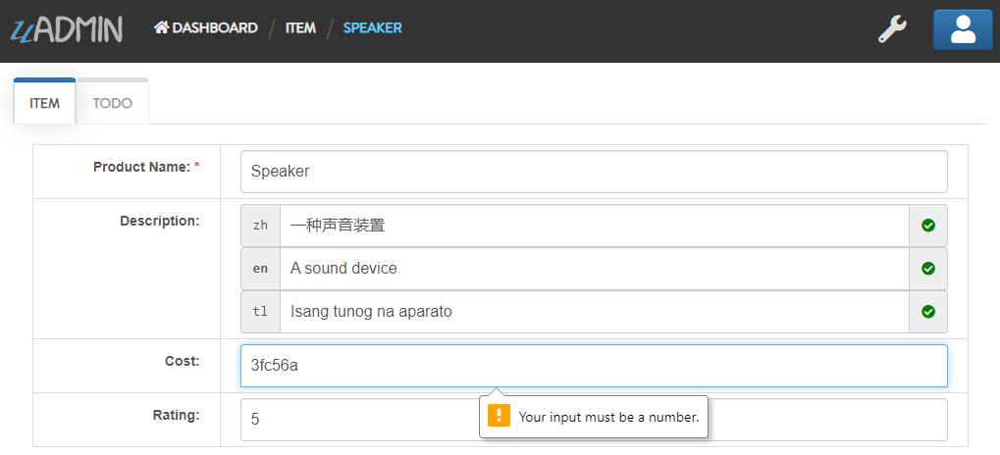
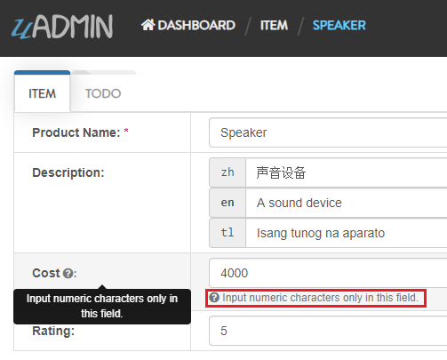
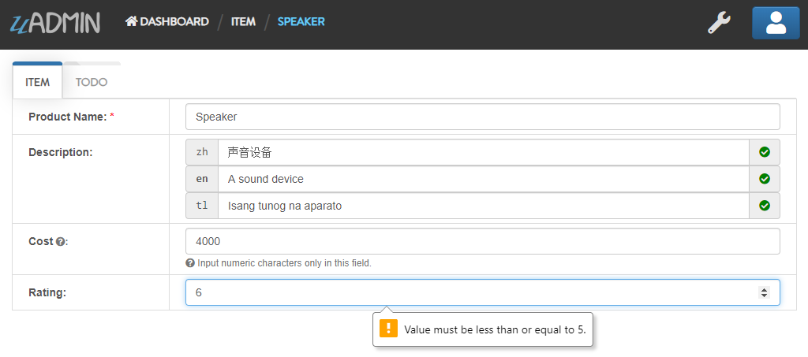

uAdmin Tutorial Part 6 - Applying uAdmin Tags¶
Create a file named item.go inside your models folder with the following codes below:
package models
import (
"github.com/uadmin/uadmin"
)
// Item Model !
type Item struct {
uadmin.Model
Name string `uadmin:"required"`
Description string
Cost int
Rating int
}
Now register the model on main.go where models is the package name and Item is the model name:
func main() {
uadmin.Register(
models.Todo{},
models.Category{},
models.Friend{},
models.Item{}, // <-- place it here
)
// Existing RegisterInlines code
// ----------- ADD THIS CODE -----------
uadmin.RegisterInlines(models.Item{}, map[string]string{
"Todo": "ItemID",
})
// ----------- ADD THIS CODE -----------
uadmin.StartServer()
}
Set the foreign key of an Item model to the Todo model and apply the tag help to inform the user what are the requirements needed in order to accomplish his activity.
package models
import (
"time"
"github.com/uadmin/uadmin"
)
// Todo Model !
type Todo struct {
uadmin.Model
Name string
Description string `uadmin:"html"`
Category Category
CategoryID uint
Friend Friend `uadmin:"help:Who will be a part of your activity?"`
FriendID uint
// Item Model
Item Item `uadmin:"help:What are the requirements needed in order to accomplish your activity?"`
// Item ID
ItemID uint
TargetDate time.Time
Progress int `uadmin:"progress_bar"`
}
Now let’s try something much cooler that we can apply in the Item model by adding different types of tags. Before we proceed, add more data in your Item model. Once you are done, let’s add the search tag in the name field of item.go and see what happens.
package models
import (
"github.com/uadmin/uadmin"
)
// Item Model !
type Item struct {
uadmin.Model
Name string `uadmin:"required;search"` // <-- place it here
Description string
Cost int
Rating int
}
Result

Search the word mini and see what happens.

Nice! Now go back to item.go and apply the tag categorical_filter and filter in the Name field and see what happens.
`categorical_filter;filter`
Name string `uadmin:"required;search;categorical_filter;filter"`
Rebuild your application. In Item model, click the filter button on the upper right.
Result

Now let’s filter the word iPad and see what happens.

We can also apply display_name tag with a given value such as Product Name.
`display_name:Product Name`
Name string `uadmin:"required;search;categorical_filter;filter;display_name:Product Name"`
Result
uAdmin has a default_value tag which will generate a value automatically in the field. Let’s say Computer.
`default_value:Computer`
Name string `uadmin:"required;search;categorical_filter;filter;display_name:Product Name;default_value:Computer"`
Result
You can also add multilingual tag in the Description field.
Description string `uadmin:"multilingual"`
Result

If you want to add more languages in your model, go to the Languages in the uAdmin dashboard.

Let’s say I want to add Chinese and Tagalog in the Items model. In order to do that, set the Active as enabled.

Now go back to the Items model and see what happens.
To customize your own languages, visit Language for the instructions.
In the Cost field, set the money tag and see what happens.
Cost int `uadmin:"money"`
Result

You can also set pattern and pattern_msg tag in the Cost field. This means the user must input numbers only. If he inputs otherwise, the pattern message will show up on the screen.
Cost int `uadmin:"money;pattern:^[0-9]*$;pattern_msg:Your input must be a number."`
Result
To solve this case, we can use a help tag feature in order to give users a solution to the complex tasks encountered in the model.
`help:Input numeric characters only in this field.`
Cost int `uadmin:"money;pattern:^[0-9]*$;pattern_msg:Your input must be a number.;help:Input numeric characters only in this field."`
Result
We can also use min and max tags in the Rating field. Min tag means the minimum value that a user can input and the max one means the maximum value. Let’s set the min value as 1 and the max value as 5.
Rating int `uadmin:"min:1;max:5"`
See what happens if the user inputs the value outside the range.
Well done! Now you know how to apply most of the tags available in our uAdmin framework that are functional in our Todo List project.
See Tag Reference for more examples.
Click here to view our progress so far.
In the next part, we will talk on the concept of M2M and how is it useful in our project.